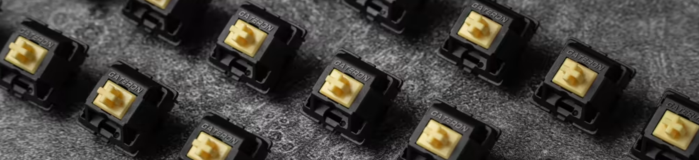

The parts required to build you own custom keyboard are as follows:

The parts required to build you own custom keyboard are as follows:
Keyboard Cases
A keyboard’s case can be made up of a top case, and a bottom case. The bottom case is also sometimes called the bottom housing and houses the keyboard, while the top encloses the top of the keyboard. Not all keyboards have a top case, depending on the design and mounting style. Most keyboard cases are made from ABS plastic, but some are made from aluminum, brass, carbon fiber, and even wood. There are several different types of case mounting styles:
The case houses the keyboard’s electronics and other parts, such as the top plate and PCB, which are designed for a specific size and layout. For example, some keyboards are full-sized, while tenkeyless keyboards omit the numerical keypad, and 65% keyboards omit both the numerical keypad and function keys.